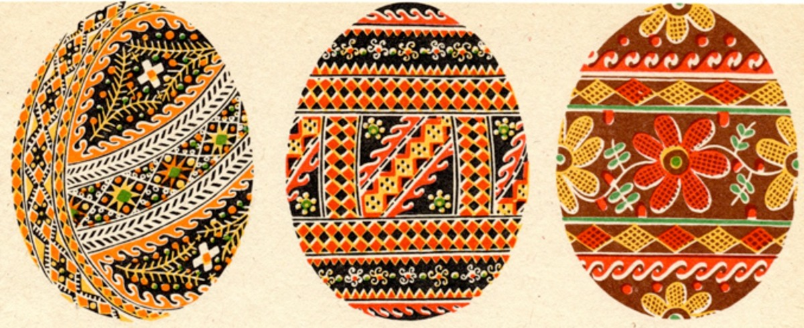

Гуцульщина
На Гуцульщині раніше надавали перевагу жовтогарячим барвам. Однак сьогодні гама доповнилась блакитними, червоними, рожевими та фіолетовими кольорами. Темні тони символізують святу землю; червоні – життя та силу, здоров’я і любов; білий колір – це чистота та праведне життя; жовтий – колір достатку та сонця, що захищає від темних сил; а зелений – весна та пробудження природи від зимового сну.
